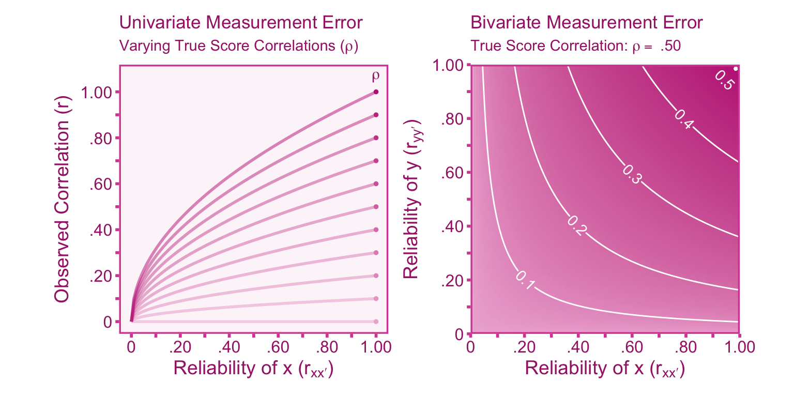

5 Unreliability
5.1 Introduction
In general terms, measurement is the process of quantifying an attribute or characteristic of something. In scientific measurement, the measurand is the quantity or the attribute we intend to measure. In the psychological sciences, measurands usually take the form of constructs such as intelligence or anxiety. The goal of measurement is to produce quantities (i.e., scores) that accurately reflect the measurand. It is important to note that measures are not all created equal, some perform better than others. Ideally, measures should produce scores that are consistent and repeatable, this is referred to as the reliability of a measure. A high quality measure should produce highly reliable scores. This section will review what reliability is in theory, how to estimate reliability, and how to adjust effect sizes for measurement error.
5.2 Reliability in True Score Theory
True score theory (or classical test theory) is a mathematical formalization of scores obtained from measurements. The true score model assumes that each person (or animal), \(p\) has a true score, \(t_p\), that stays constant over measurements. Observed scores, \(x_{pf}\), can vary between forms (\(f\)) of the measure, \(m\). This variation is due to measurement-specific error, \(e_{pf}\).
\[ x_{pf} = t_p+e_{pf} \]
The true score can be defined as the expected value (i.e., the mean) of observed scores over an infinite number of repeated measurements such that, \(\mathbb{E}_{f\rightarrow\infty}[x_{f}]=t\). It is also assumed that the expectation of measurement-specific error is zero, \(\mathbb{E}_{f\rightarrow\infty}[e_{f}]=0\). It follows from these assumptions that the covariance between errors and true scores is zero (\(\sigma_{et}=0\)) and the covariance between error scores in parallel measurements is zero (\(\sigma_{e e'}=0\)). The independence between true scores and errors provide convenient parsing of the variance in observed scores (\(\sigma^2_{x}\)) into components of variance in true scores (\(\sigma_t^2\)) and errors (\(\sigma_{e}^2\)),
\[ \sigma_{x}^2 = \sigma_t^2 + \sigma_{e}^2 \tag{5.1}\] If \(\sigma_{e}^2 > 0\) then the measurement has imperfect reliability, that is, observed scores are not identical to true scores. In practice, this is almost always the case. Reliability can be defined as the square correlation between observed scores and true scores, \(r_{xt}^2\), or the correlation between observed scores in parallel measurements, \(r_{xx'}=r_{xt}^2\).

Given that errors do not co-vary between parallel measurements and true scores are held constant over measurements, it becomes apparent that the covariance between observed scores produced from parallel measurements must solely be attributable to true score variance, \(\sigma_{xx'}=\sigma_t^2\). The covariance in observed scores can be standardized to obtain the correlation coefficient between parallel measurements (i.e., the reliability), such that,
\[r_{xx'}=\frac{\sigma_{xx'}}{\sigma_x\sigma_{x'}} = \frac{\sigma_t^2}{\sigma^2_{x}}\]
Therefore reliability can be expressed in a few forms different forms
\[ r_{xx'} =r^2_{xt} = \frac{\sigma_t^2}{\sigma_t^2+\sigma_{e}^2} = \frac{\sigma_t^2}{\sigma_{x}^2} \tag{5.2}\]
In the literature, the correlation between observed and true scores, \(r_{xt}\), is often referred to as the “measure quality index” (Hunter and Schmidt 1990), however measure quality encompasses both reliability and validity. Validity A measure can demonstrate high reliability even though the scores produced by the measure do not accurately reflect the measurand (the quantity that we are intending to measure). For example, if an individual were to step on a weight scale with shoes on, the weight presented on the scale would be highly reliable, namely, if the individual were to repeat this process, they would achieve highly similar results. Nevertheless, the observed weight is systematically biased upward by the weight of the shoes. Therefore if a measure is reliable it does not logically follow that the measure is necessarily valid.
5.3 Estimating Reliability
In practice, reliability must be estimated through indirect methods, since true scores and errors are unknown. Their are many estimators that can be used however, we will go over three of the most common approaches: coefficient alpha, split-half, and test-retest reliability.
Internal Consistency Estimators
Maybe the most conventionally reported reliability estimator in the psychological sciences is coefficient alpha, also referred to as Cronbach’s alpha or internal consistency. Alpha has the benefit of being computationally convenient, but it also brings along many assumptions that are often violated in practice (Haertel 2006; Sijtsma 2009). Cronbach’s alpha, along with other internal consistency estimators, serves the purpose of assessing the reliability of composite measures comprising multiple components. Taking multiple measurements and then averaging tends to provide a better estimate of true values. For instance, let’s consider the case of Francis Galton (Galton 1907), who conducted a study involving 787 individuals estimating the weight of an ox. On average, each person’s estimate deviated by approximately 37 pounds from the actual weight of the ox, which was recorded as 1198 pounds. However, when all the guesses were averaged together, the combined estimate was 1207 pounds, just a 9 pound difference from the actual value. Averaging a number of noisy estimates provides a much more stable and reliable estimate. So to create a more stable composite score (\(X\)), we can take the score (\(x_m\)) from \(k\) measurements and average them such that, \[ X = \frac{1}{k}(x_1 + x_2 +...+x_k)= \frac{1}{k}\sum^k_{m=1}x_m \] Coefficient alpha is represents the reliability of this composite scores. Coefficient alpha only requires three parameters to calculate, the number of measurements (\(k\)), the variances of each items ( \(\sigma^2_{x_m}\)), and the variance of the composite score (\(\sigma^2_{X}\)),
\[ _\alpha r_{X X'} = \frac{k}{k-1}\left( 1 - \frac{\sum_{m=1}^k \sigma^2_{x_m}}{\sigma^2_{X}} \right) \]
With tighter assumptions (i.e., strictly parallel forms, Haertel 2006), the formula for coefficient alpha can be simplified to just two parameters: the number of measurements and the average correlation between measured scores (\(\bar{r}_{x_i x_j}\), where \(i\neq j\)). This formula is known as Spearman-Brown’s prophecy,
\[ _\text{sb} r_{XX'}= \frac{k \bar{r}_{x_i x_j}}{1+(k-1)\bar{r}_{x_i x_j}} \]
This can be simplified further if we we have two observed scores. This formulation is traditionally called split-half reliability:
\[ _\text{sh}r_{XX',}= \frac{2r_{x_1 x_2}}{1+r_{x_1 x_2}} \]
All of these reliability estimators measure internal consistency, therefore they do not account for error outside of the measurement-specific error. There are other sources of error that internal consistency reliability estimates do not account for, such as transient error or rater-specific error.

Calculating Internal Consistency in R and Python
Let us simulate a data set of 50 individuals where each observed score has the same true score with some error.
#set seed
set.seed(343)
# set sample size
n = 50
# simulate data
t = rnorm(n, 0, 1) # simulate true scores
x1 = t + rnorm(n, 0, 1) # simulate observed scores for measurement 1
x2 = t + rnorm(n, 0, 1) # simulate observed scores for measurement 2
x3 = t + rnorm(n, 0, 1) # simulate observed scores for measurement 3
x4 = t + rnorm(n, 0, 1) # simulate observed scores for measurement 4
# calculate composite score
X = x1 + x2 + x3 + x4Calculate Coefficient Alpha Reliability:
# step 1. calculate variance of observed (measured) scores
var_xi = c(var(x1),var(x2),var(x3),var(x4))
# step 2. calculate variance of composite score
var_X = var(X)
# step 3. get number of items (k)
k = length(var_xi)
# step 4. calculate coefficient alpha reliability
rXX_alpha = k / (k-1) * (1 - sum(var_xi)/var_X)
# display reliability
print(round(rXX_alpha,3)) [1] 0.775Calculate Reliability via Spearman-Brown’s Prophecy:
# step 1. get correlation matrix between all observed scores
corr_mat = cor(cbind(x1,x2,x3,x4))
# step 2. average off-diagonal elements of matrix
diag(corr_mat) <- NA
rxixj = mean(corr_mat, na.rm = TRUE)
# step 3. get number of items (k)
k = dim(corr_mat)[1]
# step 4. calculate Spearman-Brown reliability
rXX_SB = k * rxixj / (1 + (k-1) * rxixj)
# display reliability
print(round(rXX_SB,3)) [1] 0.775Calculate the Split-Half Reliability:
# step 1. make composite scores for each half of the observed scores
X1 = x1 + x2
X2 = x3 + x4
# step 2. calculate the correlation between the scores of both halves
rX1X2 = cor(X1,X2)
# step 3. calculate the split-half reliability
rXX_SH = 2*rX1X2 / (1 + rX1X2)
# display reliability
print(round(rXX_SH,3)) [1] 0.824True Reliability: Lets see how the results compare to the squared correlation of the true scores and our composite score (true reliability).
# calculate true reliability
rXt = cor(X,t)
# display true reliability
print(round(rXt^2,3)) [1] 0.753In this case, the reliability estimates do a fairly good job of estimating the true reliability of the observed scores.
Simulate Data: Let us simulate a data set of 50 individuals where each observed score has the same true score with some error. To calculate the necessary statistics, we will import the numpy package.
#import numpy
import numpy as np
# set seed
np.random.seed(343)
# set sample size
n = 50
# simulate data
t = np.random.normal(0, 1, n) # simulate true scores
x1 = t + np.random.normal(0, 1, n) # simulate observed scores for measurement 1
x2 = t + np.random.normal(0, 1, n) # simulate observed scores for measurement 2
x3 = t + np.random.normal(0, 1, n) # simulate observed scores for measurement 3
x4 = t + np.random.normal(0, 1, n) # simulate observed scores for measurement 4
# calculate sum score
X = x1 + x2 + x3 + x4Calculate Coefficient Alpha Reliability:
# step 1. calculate variance of observed (measured) scores
var_xm = [np.var(x1),np.var(x2),np.var(x3),np.var(x4)]
# step 2. calculate variance of composite score
var_X = np.var(X)
# step 3. get number of items (k)
k = len(var_xm)
# step 4. calculate coefficient alpha reliability
rXX_alpha = k / (k-1) * (1 - sum(var_xm)/var_X)
print(round(rXX_alpha,3)) 0.769Calculate Reliability from Spearman-Brown’s prophecy formula:
# step 1. get correlation matrix between all observed scores
corr_mat = np.corrcoef([x1,x2,x3,x4])
# step 2. average off-diagonal elements of matrix
rxixj = np.mean(corr_mat[~np.eye(k,dtype=bool)])
# step 3. get number of items (k)
k = len(corr_mat)
# step 4. calculate Spearman-Brown reliability
rXX_SB = k * rxixj / (1 + (k-1) * rxixj)
print(round(rXX_SB,3)) 0.772Calculate Split-Half Reliability:
# step 1. make composite scores for each half of the observed scores
X1 = x1 + x2
X2 = x3 + x4
# step 2. calculate the correlation between the scores of both halves
rX1X2 = np.corrcoef(X1,X2)[0,1]
# step 3. calculate the split-half reliability
rXX_SH = 2*rX1X2 / (1 + rX1X2)
# display reliability
print(round(rXX_SH,3)) 0.772Lets see how the results compare to the squared correlation of the true scores and our composite score (true reliability).
# calculate true reliability
rXt = np.corrcoef(X,t)[0,1]
# display reliability
print(round(rXt**2,3)) 0.791In this case, the reliability estimates do a fairly good job of estimating the true reliability of the observed scores. There are also functions within the psych package that allow you to easily calculate coefficient alpha among other reliability estimators
5.3.1 Test-Retest Stability Estimator
There measurement errors that exist outside of the measurement instrument itself. Transient errors represent fluctuations in observed scores over time. These fluctuations, even if they are systematic (e.g., fatigue over the course of a single day), add extraneous within-person variance that can mask true scores (i.e., expectation of observed scores). For example, if a researcher wants to investigate how individuals differ in processing speed, then variation within an individual’s scores across multiple testing sessions would be considered error since the goal of the study is to investigate between-person variation. Considering transient fluctuations as error depends on the research goal, so it is important for researchers to take care in considering which variance components should be considered error in their study. To estimate test-retest reliability, we can compute the pearson correlation coefficient between the measurement at time 1 (\(x_{T_{1}}\)) and the second measurement at time 2 (\(x_{T_{2}}\)).
\[ _\text{tr}r_{xx'}= r_{x_{T_1}x_{T_2}} \]
Note that calculating the pearson correlation coefficient between time-points ignores systematic changes (e.g., practice effects).

Calculating Test-Retest Reliability in R and Python
Lets calculate test-retest reliability in R. First, we can simulate observed scores at two time points, \(T_1\) and \(T_2\). We can assume that the true scores remain constant between \(T_1\) and \(T_2\). Second, we can calculate the correlation between the observed scores at each time point (\(r_{x_{T_1}x_{T_2}}\)).
# set seed
set.seed(343)
# set sample size
n = 70
# simulate true scores
t = rnorm(n,0,1)
# simulate scores at time 1
xT1 = t + rnorm(n,0,.5)
# simulate scores at time 2
xT2 = t + rnorm(n,0,.5)
# calculate test-retest reliability
rxx = cor(xT1,xT2)
# display reliability
print(round(rxx,3))[1] 0.803# compare with true reliability
rxx_true = cor(xT1,t)^2
# display true reliability
print(round(rxx_true,3))[1] 0.768Lets calculate test-retest reliability in R. First, we can simulate observed scores at two time points, \(T_1\) and \(T_2\). We can assume that the true scores remain constant between \(T_1\) and \(T_2\). Second, we can calculate the correlation between the observed scores at each time point (\(r_{x_{T_1}x_{T_2}}\)).
# import numpy
import numpy as np
# set seed
np.random.seed(343)
# set sample size
n = 70
# simulate 70 true scores
t = np.random.normal(0,1,n)
# simulate scores at time 1
xT1 = t + np.random.normal(0,.5,n)
# simulate scores at time 2
xT2 = t + np.random.normal(0,.5,n)
# calculate test-retest reliability
rxx = np.corrcoef(xT1,xT2)[0,1]
# display reliability
print(round(rxx,3))0.768# compare with true reliability
rxx_true = np.corrcoef(xT1,t)[0,1]**2
# display true reliability
print(round(rxx_true,3))0.7315.3.2 Sources of Measurement Error
There are many estimators of reliability beyond internal consistency and test-retest that account for different sources of error and hold different assumptions. There are many sources of measurement error that different estimators of reliability account for adapted from table 1 of Wiernik and Dahlke (2020) :
Random Response Error: Genuine randomness in responses. Examples include: motor errors and variation in response time.
Time/Environment-Specific (Transient) Error: Fluctuations in scores as a result of the specific time or environment of the measurement. For instance, if researchers administered an ability test to a sample of undergraduate students throughout the course of a day, the student’s who complete the test at the end of the day will likely perform worse than participant’s who completed due to fatigue rather than ability. Errors due to illness, mood, hunger, environmental distractors, etc. all fall under the umbrella of transient errors.
Instrument-Specific Error: Error due to the specific content or make-up of the measurement instrument. For example, a psychological scale using likert items participant’s idiosyncratic interpretations of questions and response options rather than their standing on the latent construct.
Rater/Observer-Specific Error: Errors induced by idiosyncratic biases of individual raters and rater by ratee interactions (e.g., Teacher A gives higher grades to students who stay after class).
Different estimators of reliability account for different sources of measurement error therefore depending on the research design, it is important to carefully choose which reliability is most relevant for your use case. Note that even if two estimators account for the same types of measurement error, they likely hold different assumptions that may be violated in a given research context.
| Estimator | Description | Random Response Error | Transient Error | Instrument-Specific Error | Rater-Specific Error |
|---|---|---|---|---|---|
| Coefficient Alpha | Internal consistency coefficient for composite measures. | ✔️ | ✔️ | ||
| Coefficient Omega | Internal consistency coefficient for composite measures with specified factor structure. | ✔️ | ✔️ | ||
| Split-Half | Internal consistency coefficient for measurements that are split into two halves. | ✔️ | ✔️ | ||
| Kuder-Richardson 20 | Internal consistency when observed scores are binary (special case of coefficient alpha). | ✔️ | ✔️ | ||
| Item Response Theory Reliability | Reliability coefficient derived from item response theory (as opposed to classical test theory) | ✔️ | ✔️ | ||
| Inter-Rater/Inter-Observer Reliability | Consistency in scoring between raters/observers. | ✔️ | ✔️ | ||
| Test-Retest | Stability coefficient for repeated measurements across time | ✔️ | ✔️ | ||
| Delayed Coefficient Alpha | Average of all possible split-half reliabilities | ✔️ | ✔️ | ✔️ | |
| G-Coefficient | Reliability coefficient derived from generalizability theory (G-theory). Can incorporate any source of error if enough data is present. | ✔️ | ✔️ | ✔️ | ✔️ |
5.4 Bias in Correlation Coefficients
Unreliability induces systematic bias in effect size estimates such as correlation coefficients Spearman (1904). Lets say we have two observed scores $x$ and $y$,
\[ x=x_t+e \]
\[ y=y_t+e \]
In most research contexts, we would like to estimate the correlation between true scores where the correlation between true scores, \(x_t\) and \(y_t\) is \[ \rho=\frac{\sigma_{x_ty_t}}{\sigma_{x_t} \sigma_{y_t}} \]
The observed correlation differs only in that it standardizes the covariance by the product of the standard deviations of observed scores rather than true scores. The covariance of observed scores will be equivalent to the covariance of true scores assuming \(\sigma_{e_x e_y}=0\) (see sec-true-score-theory).
\[ r=\frac{\sigma_{xy}}{\sigma_x \sigma_y} = \frac{\sigma_{x_ty_t}}{\sigma_x \sigma_y} \tag{5.3}\]
In the presence of measurement error, the observed standard deviations (\(\sigma_x\) and \(\sigma_y\)) will be larger than the true standard deviations (\(\sigma_x\) and \(\sigma_y\)). Since the reliability is defined as the ratio of true variance to total observed variance (see Equation eq-reliability ), we can see how reliability inflates the true standard deviation
\[ \sigma^2_x =\sigma^2_{x_t} \cdot \frac{\sigma^2_{x}}{\sigma^2_{x_t}} = \sigma^2_{x_t}\cdot\frac{1}{r_{xx'}} = \frac{\sigma^2_{xt}}{r_{xx'}} \]
Therefore,
\[ \sigma_x = \frac{\sigma_{x_t}}{\sqrt{r_{xx'}}} \]
If we plug this back into equation Equation eq-bias then we can see how the observed correlation changes as a function of reliability and how it is biased from the true score correlation \(\rho\):
\[ \begin{align} r &= \frac{\sigma_{x_ty_t}}{\sigma_{x} \sigma_{y}} \\ &= \frac{\sigma_{x_ty_t}}{\left[\frac{\sigma_{x_t}}{\sqrt{r_{xx'}}} \right] \left[ \frac{\sigma_{y_t}}{\sqrt{r_{yy'}}} \right] } \\ &= \frac{\sigma_{x_ty_t}}{\sigma_{x_t}\sigma_{y_t}} \cdot \sqrt{r_{yy'}}\sqrt{r_{xx'}} \\ &= \rho\sqrt{r_{yy'}}\sqrt{r_{xx'}} \end{align} \] This equation was first provided by Spearman (1904) For cases where measurement error only affects one of the two variables, the attenuation
rho = .5
X_true = rnorm(50,0,1)
Y_true = rho * X_true + rnorm(50,0,sqrt(1-rho^2))
h1 <- ggplot(data = NULL, aes(x = X_true, y = Y_true)) +
geom_point(color = main_color_blue, fill = main_color_blue) +
scale_x_continuous(limits = c(-3,3)) +
scale_y_continuous(limits = c(-3,3)) +
xlab("True x")+
ylab("True y") +
ggtitle('True Score Correlation', subtitle = TeX("$\\rho =$ .50")) +
theme(aspect.ratio = 1,
panel.grid.minor = element_blank(),
panel.grid.major = element_blank(),
title = element_text(color = text_color_blue),
panel.background = element_rect(fill = panel_color_blue),
panel.border = element_rect(fill = NA, color = border_color_blue,linewidth=1.2),
axis.title = element_text(size=14, color = text_color_blue),
axis.text.x = element_text(size=12, color = text_color_blue),
axis.text.y = element_text(size=12, color = text_color_blue),
axis.ticks = element_line(color = border_color_blue,linewidth=1),
legend.position = "none")
X_obs = X_true + rnorm(50,0, sqrt( 1/.8 - 1) )
Y_obs = Y_true + rnorm(50,0, sqrt( 1/.8 - 1) )
h4 <- ggplot(data = NULL, aes(x = X_obs, y = Y_obs)) +
geom_point(color = main_color_blue, fill = main_color_blue) +
scale_x_continuous(limits = c(-3,3)) +
scale_y_continuous(limits = c(-3,3)) +
xlab("True x")+
ylab("True y") +
ggtitle('True Score Correlation', subtitle = TeX("$\\rho =$ .50")) +
theme(aspect.ratio = 1,
panel.grid.minor = element_blank(),
panel.grid.major = element_blank(),
title = element_text(color = text_color_blue),
panel.background = element_rect(fill = panel_color_blue),
panel.border = element_rect(fill = NA, color = border_color_blue,linewidth=1.2),
axis.title = element_text(size=14, color = text_color_blue),
axis.text.x = element_text(size=12, color = text_color_blue),
axis.text.y = element_text(size=12, color = text_color_blue),
axis.ticks = element_line(color = border_color_blue,linewidth=1),
legend.position = "none")
h1 + h2

Ultimately, the inflation of the observed standard deviation As described in Equation eq-reliability, the reliability can be interpreted as the ratio of total observed variance to
Fortunately, there are corrections that can be applied to effect size estimates to account for bias.
5.5 Corrections for Bias in Correlations
5.6 Correction for Unreliability in Correlation Coefficients
5.6.1 Bias in Correlations
Measurements that produce scores with low reliability by definition have low correlations between observed scores on parallel forms of the measurement. It should should not be expected that any other variable would.
5.6.2 Bias in Standardized Mean Difference
5.6.2.1 Between-Group Standardized Mean Difference
5.6.2.2 Repeated Measures Standardized Mean Difference
Bobko, Philip, Philip Roth, and Christopher Bobko. 2001. “Correcting the Effect Size of d for Range Restriction and Unreliability.” Organizational Research Methods - ORGAN RES METHODS 4 (January): 46–61. https://doi.org/10.1177/109442810141003.
Brennan, Robert L. 2010. “Generalizability Theory and Classical Test Theory.” Applied Measurement in Education 24 (1): 1–21. https://doi.org/10.1080/08957347.2011.532417.
Charles, Eric. 2005. “The Correction for Attenuation Due to Measurement Error: Clarifying Concepts and Creating Confidence Sets.” Psychological Methods 10 (July): 206–26. https://doi.org/10.1037/1082-989X.10.2.206.
Galton, Francis. 1907. “Vox Populi.” Nature 75 (1949): 450–51. https://doi.org/10.1038/075450a0.
Gliem, Joseph A., and Rosemary R. Gliem. 2003. “Calculating, Interpreting, And Reporting Cronbach’s Alpha Reliability Coefficient For Likert-Type Scales.” https://scholarworks.iupui.edu/handle/1805/344.
Haertel, Edward H. 2006. “3. Reliability.” In, 4th ed.
Hunter, John E., and Frank L. Schmidt. 1990. Methods of meta-analysis: correcting error and bias in research findings. Newbury Park: Sage Publications.
Mendoza, Jorge L., and Michael Mumford. 1987. “Corrections for Attenuation and Range Restriction on the Predictor.” Journal of Educational Statistics 12 (3): 282–93. https://doi.org/10.3102/10769986012003282.
Schmidt, Frank L., Huy Le, and Remus Ilies. 2003. “Beyond Alpha: An Empirical Examination of the Effects of Different Sources of Measurement Error on Reliability Estimates for Measures of Individual-Differences Constructs.” Psychological Methods 8: 206–24. https://doi.org/10.1037/1082-989X.8.2.206.
Sijtsma, Klaas. 2009. “On the Use, the Misuse, and the Very Limited Usefulness of Cronbach’s Alpha.” Psychometrika 74 (1): 107–20. https://doi.org/10.1007/s11336-008-9101-0.
Spearman, C. 1904. “The Proof and Measurement of Association Between Two Things.” International Journal of Epidemiology 39 (5): 1137–50. https://doi.org/10.1093/ije/dyq191.
Viswanathan, Madhu. 2005. Measurement Error and Research Design. SAGE.
Viswesvaran, Chockalingam, Deniz S. Ones, Frank L. Schmidt, Huy Le, and In-Sue Oh. 2014. “Measurement Error Obfuscates Scientific Knowledge: Path to Cumulative Knowledge Requires Corrections for Unreliability and Psychometric Meta-Analyses.” Industrial and Organizational Psychology 7 (4): 507–18. https://doi.org/10.1017/S1754942600006799.
Wiernik, Brenton M., and Jeffrey A. Dahlke. 2020. “Obtaining Unbiased Results in Meta-Analysis: The Importance of Correcting for Statistical Artifacts.” Advances in Methods and Practices in Psychological Science 3 (1): 94–123. https://doi.org/10.1177/2515245919885611.